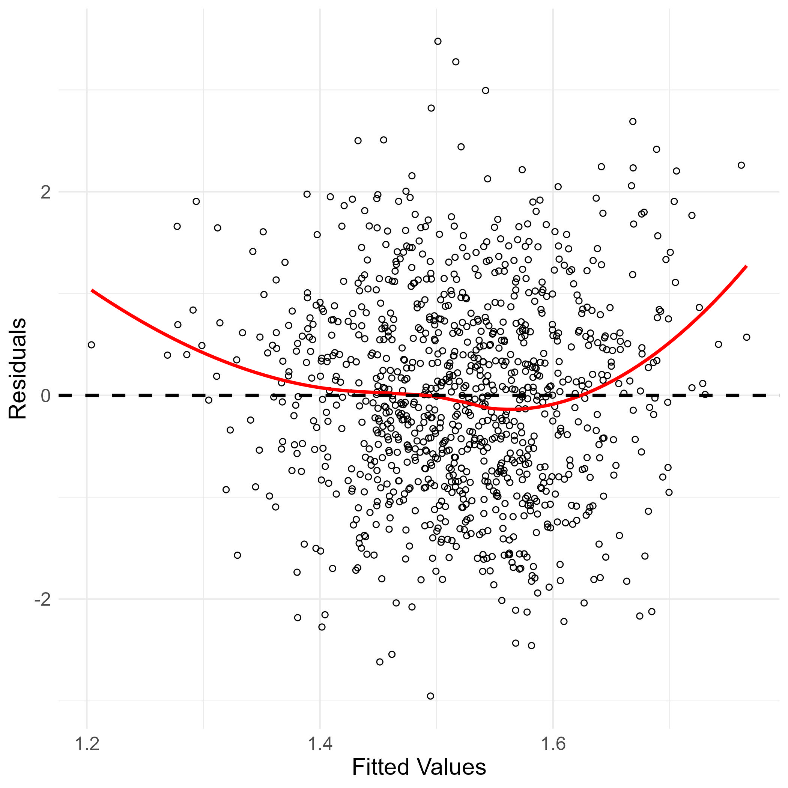
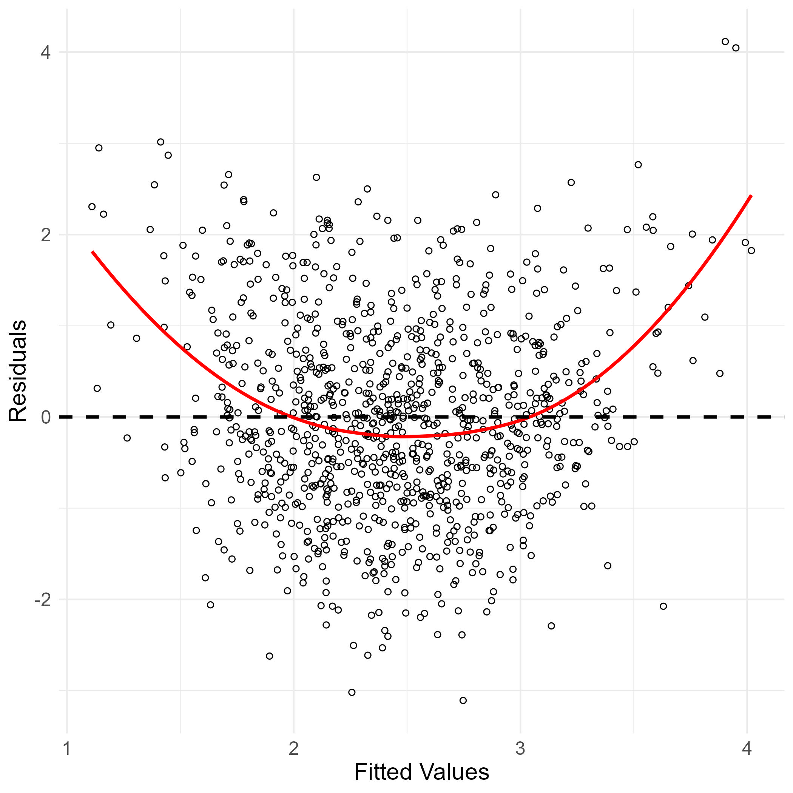
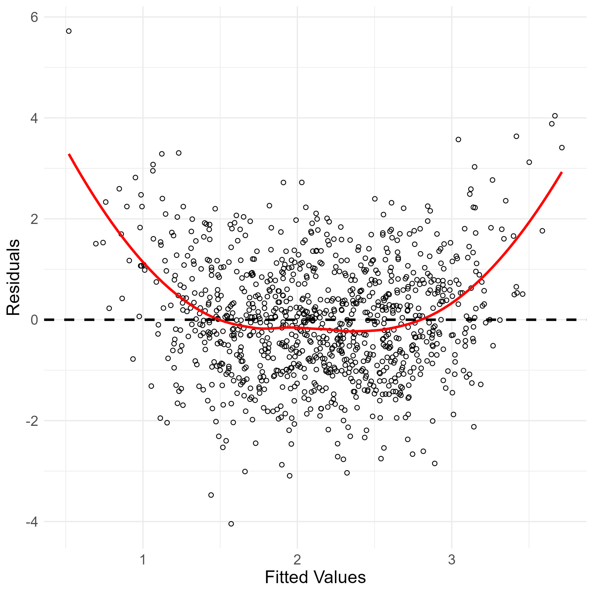
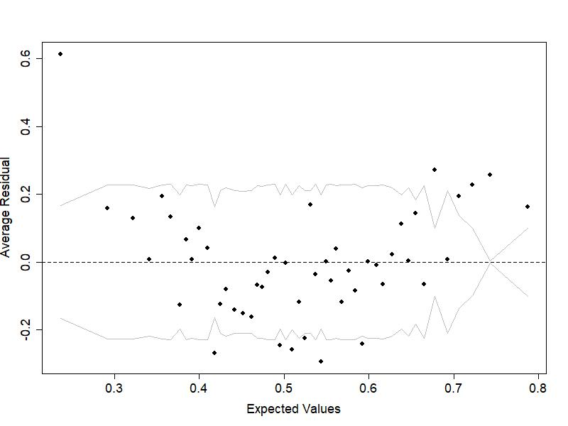
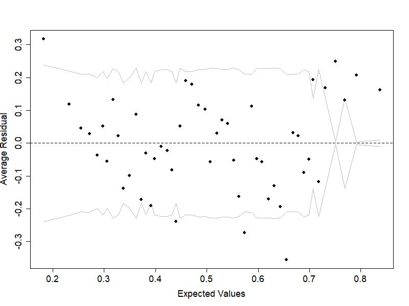

| Condition | DGM | Sample size | Proportion exposed |
|---|---|---|---|
| 1 | 1 | 300 | 0.1 |
| 2 | 1 | 300 | 0.5 |
| 3 | 1 | 300 | 0.9 |
| 4 | 2 | 300 | 0.1 |
| 5 | 2 | 300 | 0.5 |
| 6 | 2 | 300 | 0.9 |
| 7 | 3 | 300 | 0.1 |
| 8 | 3 | 300 | 0.5 |
| 9 | 3 | 300 | 0.9 |
| 10 | 4 | 300 | 0.1 |
| 11 | 4 | 300 | 0.5 |
| 12 | 4 | 300 | 0.9 |
| 13 | 5 | 300 | 0.1 |
| 14 | 5 | 300 | 0.5 |
| 15 | 5 | 300 | 0.9 |
| 16 | 1 | 1000 | 0.1 |
| 17 | 1 | 1000 | 0.5 |
| 18 | 1 | 1000 | 0.9 |
| 19 | 2 | 1000 | 0.1 |
| 20 | 2 | 1000 | 0.5 |
| 21 | 2 | 1000 | 0.9 |
| 22 | 3 | 1000 | 0.1 |
| 23 | 3 | 1000 | 0.5 |
| 24 | 3 | 1000 | 0.9 |
| 25 | 4 | 1000 | 0.1 |
| 26 | 4 | 1000 | 0.5 |
| 27 | 4 | 1000 | 0.9 |
| 28 | 5 | 1000 | 0.1 |
| 29 | 5 | 1000 | 0.5 |
| 30 | 5 | 1000 | 0.9 |
Online Supplementary Materials of Mulder, Luijken, Penning de Vries and Hamaker (2024)
“Estimating Causal Effects of Time-Varying Exposures: The Overlap and Differences Between Structural Equation Modeling and Marginal Structural Models”
This website is the online supplementary materials of Mulder et al. (2024). It contains the R code and Mplus syntax for both the empirical example and the simulation study, as well as additional explanations regarding the simulation study and its numerical results.
Erratum Notice
After publication, an error in the R code for the simulation study was found. The simulation study was rerun after correction. Small numerical differences were found for DGM 5 of Figures 6 and 7, which do not impact the conclusions of the paper. See the Section Erratum for an explanation of the differences in results. The downloadable R code is corrected.
Empirical Example
For the empirical example, we made use of the health survey data of the Longitudinal Internet studies for the Social Sciences panel, administered by Centerdata (Tilburg University, The Netherlands). More information about the LISS panel can be found at https://www.lissdata.nl (Scherpenzeel 2018). The data were prepared for analyses in R version 4.2.2 (R Core Team 2022). Estimation of the joint effect of smoking cessation on end-of-study weight using inverse probability weighted regression of a marginal structural model was also done in R using the R packages WeightIt (version 0.14.0) by Greifer (2023b), cobalt (version 4.5.0) by Greifer (2023a), boot (version 1.3-28) by Canty and Ripley (2022); mice (version 3.16.0) by Buuren and Groothuis-Oudshoorn (2011); and foreign (version 0.8-83) by R Core Team (2023). Additionally, we made use of the R packages dplyr (version 1.1.4) by Wickham et al. (2023); purrr (version 1.0.2) by Wickham and Henry (2023); and ggplot2 (version 3.4.4) by Wickham (2016).
🔗 Click here to download the R code for the empirical example.
A path model was fitted to the LISS data in Mplus version 8.9 (Muthén and Muthén 2017).
🔗 Click here to download the Mplus input file for the empirical example.
Simulation Study
For the simulation study, data were generated in R. Analyses of the generated data using using inverse probability weighted regression of a marginal structural model were also performed in R.
🔗 Click here to download the R code for the simulation study.
Path models were fitted to the simulated data in Mplus version 8.9 (Muthén and Muthén 2017).
🔗 Click here to download the Mplus input and output files for the simulation study.
Data Generating Mechanisms
Data were generated under five different data-generating mechanisms (DGMs), which differed with respect to the functional form of specific dependencies. These nonlinear dependencies are illustrated in Figure 5 in the main paper for DGMs 2, 3, and 4. Figure 5 displays the conditional relationships, that is, the relationship between one predictor and one expected outcome given a specific value of confounders for this relationship. In this subsection of the online supplementary materials, we provide additional visualizations of the nonlinear dependencies in DGMs 2, 3, and 4 to help illustrate the degree of nonlinearity across DGMs. We do this using fitted vs. residual plots, and by simulating the explained variance (\(R^{2}\)) of the nonlinear component of the relationships.
As illustrated in Figure 5 of the main paper, the dependencies of \(L_{0}\) and \(L_{1}\) on previous covariates in DGM 2 include both a linear and a quadratic term. To illustrate the combined impact of the nonlinear terms on the outcomes \(L_{0}\) and \(L_{1}\), we can generate data under this DGM, fit a linear regression model predicting \(L_{0}\) and \(L_{1}\) based on previous covariates, and then inspect a plot of the residuals against the fitted values.


The residual plots show significant nonlinearity for both \(L_{0}\) and \(L_{1}\), with the smooth trend lines displaying clear quadratic curvatures. To express the degree of nonlinearity in terms of explained variance \(R^{2}\), we simulate a dataset with \(n = 10,000,000\) under DGM2 and fit two models: A regression model including only linear terms and a regression model that additionally includes quadratic terms for the nonlinear dependencies. The difference in explained variance, \(\Delta R^{2}\) between both models represents the amount of explained variance in the outcome due to its nonlinear dependencies. For \(L_{0}\), we find \(R^{2}_{linear} = .010\) and \(R^{2}_{quadratic} = .029\) such that \(\Delta R^{2} = .019\). For \(L_{1}\), we find \(R^{2}_{linear} = .141\) and \(R^{2}_{quadratic} = .295\) such that \(\Delta R^{2} = .153\).
In DGM3, the relationship between the outcome \(Y_{2}\) and baseline \(L_{-1}\) and time-varying covariates \(L_{0}\) and \(L_{1}\) was generated to be quadratic. The below plot of the residuals against the fitted values of \(Y_{2}\) shows significant nonlinearity and a quadratic curvature in the smooth trend line.

Inspecting the explained variances for a linear and nonlinear For \(L_{0}\), we find \(R^{2}_{linear} = .197\) and \(R^{2}_{quadratic} = .401\) such that \(\Delta R^{2} = .204\).
In DGM4, the relationship between the binary time-varying exposures \(A_{0}\) and \(A_{1}\) and the time-varying covariates \(L_{0}\) and \(L_{1}\) were generated to be quadratic. In the case of logistic regression, a plot of the residuals is generally not useful. Following Gelman and Hill (2006), we display a binned residuals plot instead. This visualization displays the average residual for a stratum of the fitted values (i.e., the expected values). The gray lines approximate the boundaries of the 95% confidence interval.


The binned residual plots show a quadratic curvature in the average residuals, indicating nonlinearity for both \(A_{0}\) and \(A_{1}\). This implies that a quadratic term is needed to correctly model the dependencies of the time-varying exposures.
Simulation Conditions
In total, the simulation study contains thirty simulation conditions that differ in terms of sample size, proportion exposed at \(X_{0}\) and \(X_{1}\) and data generating mechanism. An overview of the conditions can be found in the below table.
Numerical Results
Below you can find the numerical results for all simulation conditions and for each estimation method.
| Condition | Method | Bias | 95% CI (bias) | MSE | 95% CI (MSE) |
|---|---|---|---|---|---|
| 1 | IPW (L) | 0.018 | [-0.005 - 0.04] | 0.129 | [0.114 - 0.145] |
| 1 | IPW (L, Q) | 0.018 | [-0.005 - 0.04] | 0.129 | [0.114 - 0.145] |
| 1 | Path (L, Q) | -0.013 | [-0.038 - 0.012] | 0.166 | [0.151 - 0.182] |
| 1 | Path (L) | -0.013 | [-0.038 - 0.012] | 0.166 | [0.151 - 0.182] |
| 1 | Unadjusted | 0.364 | [0.347 - 0.381] | 0.210 | [0.196 - 0.224] |
| 2 | IPW (L) | 0.001 | [-0.01 - 0.012] | 0.031 | [0.028 - 0.034] |
| 2 | IPW (L, Q) | 0.001 | [-0.01 - 0.012] | 0.031 | [0.028 - 0.034] |
| 2 | Path (L, Q) | 0.006 | [-0.008 - 0.02] | 0.050 | [0.046 - 0.054] |
| 2 | Path (L) | 0.006 | [-0.008 - 0.02] | 0.050 | [0.046 - 0.054] |
| 2 | Unadjusted | 0.311 | [0.301 - 0.321] | 0.121 | [0.115 - 0.128] |
| 3 | IPW (L) | 0.032 | [0.011 - 0.054] | 0.119 | [0.107 - 0.13] |
| 3 | IPW (L, Q) | 0.032 | [0.011 - 0.054] | 0.119 | [0.107 - 0.13] |
| 3 | Path (L, Q) | 0.017 | [-0.007 - 0.041] | 0.148 | [0.134 - 0.163] |
| 3 | Path (L) | 0.017 | [-0.007 - 0.041] | 0.148 | [0.134 - 0.163] |
| 3 | Unadjusted | 0.368 | [0.351 - 0.384] | 0.208 | [0.194 - 0.222] |
| 4 | IPW (L) | 0.008 | [-0.013 - 0.029] | 0.111 | [0.102 - 0.121] |
| 4 | IPW (L, Q) | 0.008 | [-0.013 - 0.029] | 0.111 | [0.102 - 0.121] |
| 4 | Path (L, Q) | -0.024 | [-0.049 - 0.001] | 0.163 | [0.148 - 0.178] |
| 4 | Path (L) | -0.005 | [-0.03 - 0.02] | 0.163 | [0.148 - 0.178] |
| 4 | Unadjusted | 0.453 | [0.435 - 0.47] | 0.284 | [0.267 - 0.301] |
| 5 | IPW (L) | 0.004 | [-0.007 - 0.016] | 0.033 | [0.03 - 0.036] |
| 5 | IPW (L, Q) | 0.004 | [-0.007 - 0.016] | 0.033 | [0.03 - 0.036] |
| 5 | Path (L, Q) | 0.004 | [-0.01 - 0.018] | 0.051 | [0.046 - 0.055] |
| 5 | Path (L) | 0.003 | [-0.011 - 0.017] | 0.051 | [0.047 - 0.055] |
| 5 | Unadjusted | 0.341 | [0.331 - 0.351] | 0.140 | [0.134 - 0.147] |
| 6 | IPW (L) | 0.018 | [-0.004 - 0.04] | 0.129 | [0.114 - 0.144] |
| 6 | IPW (L, Q) | 0.018 | [-0.004 - 0.04] | 0.129 | [0.114 - 0.144] |
| 6 | Path (L, Q) | -0.026 | [-0.05 - -0.001] | 0.155 | [0.141 - 0.169] |
| 6 | Path (L) | -0.043 | [-0.067 - -0.018] | 0.159 | [0.145 - 0.173] |
| 6 | Unadjusted | 0.324 | [0.307 - 0.342] | 0.183 | [0.17 - 0.197] |
| 7 | IPW (L) | 0.027 | [0.004 - 0.05] | 0.139 | [0.126 - 0.151] |
| 7 | IPW (L, Q) | 0.027 | [0.004 - 0.05] | 0.139 | [0.126 - 0.151] |
| 7 | Path (L, Q) | 0.013 | [-0.012 - 0.038] | 0.162 | [0.149 - 0.176] |
| 7 | Path (L) | 0.246 | [0.216 - 0.277] | 0.302 | [0.275 - 0.328] |
| 7 | Unadjusted | 0.583 | [0.56 - 0.605] | 0.470 | [0.44 - 0.5] |
| 8 | IPW (L) | -0.001 | [-0.013 - 0.012] | 0.041 | [0.037 - 0.045] |
| 8 | IPW (L, Q) | -0.001 | [-0.013 - 0.012] | 0.041 | [0.037 - 0.045] |
| 8 | Path (L, Q) | -0.004 | [-0.018 - 0.009] | 0.046 | [0.042 - 0.05] |
| 8 | Path (L) | -0.006 | [-0.021 - 0.009] | 0.059 | [0.053 - 0.064] |
| 8 | Unadjusted | 0.310 | [0.3 - 0.321] | 0.126 | [0.119 - 0.133] |
| 9 | IPW (L) | -0.008 | [-0.032 - 0.017] | 0.156 | [0.138 - 0.174] |
| 9 | IPW (L, Q) | -0.008 | [-0.032 - 0.017] | 0.156 | [0.138 - 0.174] |
| 9 | Path (L, Q) | -0.029 | [-0.053 - -0.004] | 0.158 | [0.143 - 0.173] |
| 9 | Path (L) | -0.263 | [-0.29 - -0.236] | 0.261 | [0.237 - 0.284] |
| 9 | Unadjusted | 0.124 | [0.106 - 0.142] | 0.100 | [0.091 - 0.11] |
| 10 | IPW (L) | -0.531 | [-0.573 - -0.489] | 0.741 | [0.663 - 0.819] |
| 10 | IPW (L, Q) | 0.045 | [0.016 - 0.075] | 0.227 | [0.204 - 0.25] |
| 10 | Path (L, Q) | 0.012 | [-0.013 - 0.036] | 0.160 | [0.145 - 0.174] |
| 10 | Path (L) | 0.012 | [-0.013 - 0.036] | 0.160 | [0.145 - 0.174] |
| 10 | Unadjusted | 0.479 | [0.461 - 0.496] | 0.310 | [0.291 - 0.328] |
| 11 | IPW (L) | -0.021 | [-0.031 - -0.011] | 0.027 | [0.024 - 0.029] |
| 11 | IPW (L, Q) | 0.008 | [-0.005 - 0.021] | 0.042 | [0.036 - 0.049] |
| 11 | Path (L, Q) | -0.006 | [-0.02 - 0.008] | 0.050 | [0.046 - 0.054] |
| 11 | Path (L) | -0.006 | [-0.02 - 0.008] | 0.050 | [0.046 - 0.054] |
| 11 | Unadjusted | 0.233 | [0.224 - 0.243] | 0.079 | [0.074 - 0.084] |
| 12 | IPW (L) | 0.091 | [0.073 - 0.11] | 0.096 | [0.088 - 0.104] |
| 12 | IPW (L, Q) | 0.061 | [0.038 - 0.084] | 0.138 | [0.124 - 0.152] |
| 12 | Path (L, Q) | 0.001 | [-0.024 - 0.025] | 0.153 | [0.139 - 0.166] |
| 12 | Path (L) | 0.001 | [-0.024 - 0.025] | 0.153 | [0.139 - 0.166] |
| 12 | Unadjusted | 0.211 | [0.194 - 0.228] | 0.121 | [0.112 - 0.131] |
| 13 | IPW (L) | 1.074 | [1.009 - 1.138] | 2.233 | [1.988 - 2.478] |
| 13 | IPW (L, Q) | 0.157 | [0.118 - 0.197] | 0.432 | [0.377 - 0.487] |
| 13 | Path (L, Q) | 0.014 | [-0.016 - 0.044] | 0.238 | [0.216 - 0.26] |
| 13 | Path (L) | 1.799 | [1.753 - 1.845] | 3.776 | [3.596 - 3.956] |
| 13 | Unadjusted | 2.543 | [2.507 - 2.58] | 6.811 | [6.615 - 7.008] |
| 14 | IPW (L) | 0.562 | [0.55 - 0.574] | 0.352 | [0.338 - 0.365] |
| 14 | IPW (L, Q) | 0.117 | [0.098 - 0.136] | 0.109 | [0.084 - 0.133] |
| 14 | Path (L, Q) | 0.000 | [-0.014 - 0.015] | 0.054 | [0.049 - 0.059] |
| 14 | Path (L) | 0.487 | [0.471 - 0.503] | 0.304 | [0.288 - 0.321] |
| 14 | Unadjusted | 0.892 | [0.88 - 0.904] | 0.833 | [0.812 - 0.855] |
| 15 | IPW (L) | 0.515 | [0.496 - 0.534] | 0.358 | [0.336 - 0.38] |
| 15 | IPW (L, Q) | 0.279 | [0.253 - 0.305] | 0.251 | [0.23 - 0.272] |
| 15 | Path (L, Q) | 0.023 | [-0.001 - 0.047] | 0.146 | [0.133 - 0.158] |
| 15 | Path (L) | 0.268 | [0.242 - 0.294] | 0.250 | [0.229 - 0.271] |
| 15 | Unadjusted | 0.602 | [0.584 - 0.62] | 0.447 | [0.423 - 0.471] |
| 16 | IPW (L) | 0.010 | [-0.002 - 0.022] | 0.037 | [0.033 - 0.041] |
| 16 | IPW (L, Q) | 0.010 | [-0.002 - 0.022] | 0.037 | [0.033 - 0.041] |
| 16 | Path (L, Q) | -0.004 | [-0.018 - 0.009] | 0.045 | [0.041 - 0.049] |
| 16 | Path (L) | -0.004 | [-0.018 - 0.009] | 0.045 | [0.041 - 0.049] |
| 16 | Unadjusted | 0.359 | [0.349 - 0.368] | 0.152 | [0.145 - 0.159] |
| 17 | IPW (L) | -0.007 | [-0.013 - -0.002] | 0.009 | [0.008 - 0.01] |
| 17 | IPW (L, Q) | -0.007 | [-0.013 - -0.002] | 0.009 | [0.008 - 0.01] |
| 17 | Path (L, Q) | -0.004 | [-0.012 - 0.004] | 0.016 | [0.014 - 0.017] |
| 17 | Path (L) | -0.004 | [-0.012 - 0.004] | 0.016 | [0.014 - 0.017] |
| 17 | Unadjusted | 0.307 | [0.301 - 0.312] | 0.101 | [0.098 - 0.105] |
| 18 | IPW (L) | 0.017 | [0.005 - 0.029] | 0.038 | [0.035 - 0.042] |
| 18 | IPW (L, Q) | 0.017 | [0.005 - 0.029] | 0.038 | [0.035 - 0.042] |
| 18 | Path (L, Q) | 0.010 | [-0.003 - 0.023] | 0.044 | [0.04 - 0.048] |
| 18 | Path (L) | 0.010 | [-0.003 - 0.023] | 0.044 | [0.04 - 0.048] |
| 18 | Unadjusted | 0.374 | [0.365 - 0.384] | 0.163 | [0.156 - 0.17] |
| 19 | IPW (L) | 0.001 | [-0.01 - 0.013] | 0.035 | [0.032 - 0.038] |
| 19 | IPW (L, Q) | 0.001 | [-0.01 - 0.013] | 0.035 | [0.032 - 0.038] |
| 19 | Path (L, Q) | 0.005 | [-0.008 - 0.018] | 0.042 | [0.039 - 0.046] |
| 19 | Path (L) | 0.024 | [0.011 - 0.037] | 0.044 | [0.04 - 0.047] |
| 19 | Unadjusted | 0.461 | [0.451 - 0.47] | 0.236 | [0.227 - 0.245] |
| 20 | IPW (L) | -0.002 | [-0.008 - 0.005] | 0.011 | [0.01 - 0.012] |
| 20 | IPW (L, Q) | -0.002 | [-0.008 - 0.005] | 0.011 | [0.01 - 0.012] |
| 20 | Path (L, Q) | -0.001 | [-0.009 - 0.006] | 0.015 | [0.013 - 0.016] |
| 20 | Path (L) | -0.001 | [-0.009 - 0.006] | 0.015 | [0.014 - 0.016] |
| 20 | Unadjusted | 0.337 | [0.331 - 0.342] | 0.121 | [0.117 - 0.125] |
| 21 | IPW (L) | 0.012 | [0.001 - 0.024] | 0.037 | [0.033 - 0.041] |
| 21 | IPW (L, Q) | 0.012 | [0.001 - 0.024] | 0.037 | [0.033 - 0.041] |
| 21 | Path (L, Q) | 0.001 | [-0.012 - 0.013] | 0.042 | [0.038 - 0.045] |
| 21 | Path (L) | -0.019 | [-0.031 - -0.006] | 0.042 | [0.038 - 0.046] |
| 21 | Unadjusted | 0.340 | [0.331 - 0.349] | 0.137 | [0.13 - 0.144] |
| 22 | IPW (L) | 0.035 | [0.022 - 0.048] | 0.044 | [0.04 - 0.049] |
| 22 | IPW (L, Q) | 0.035 | [0.022 - 0.048] | 0.044 | [0.04 - 0.049] |
| 22 | Path (L, Q) | 0.000 | [-0.014 - 0.013] | 0.047 | [0.043 - 0.051] |
| 22 | Path (L) | 0.226 | [0.21 - 0.243] | 0.121 | [0.111 - 0.132] |
| 22 | Unadjusted | 0.579 | [0.566 - 0.591] | 0.373 | [0.358 - 0.388] |
| 23 | IPW (L) | -0.003 | [-0.01 - 0.004] | 0.013 | [0.011 - 0.014] |
| 23 | IPW (L, Q) | -0.003 | [-0.01 - 0.004] | 0.013 | [0.011 - 0.014] |
| 23 | Path (L, Q) | -0.007 | [-0.015 - 0.001] | 0.015 | [0.014 - 0.017] |
| 23 | Path (L) | -0.009 | [-0.018 - -0.001] | 0.019 | [0.018 - 0.021] |
| 23 | Unadjusted | 0.312 | [0.306 - 0.318] | 0.107 | [0.103 - 0.11] |
| 24 | IPW (L) | -0.014 | [-0.029 - 0.001] | 0.056 | [0.048 - 0.064] |
| 24 | IPW (L, Q) | -0.014 | [-0.029 - 0.001] | 0.056 | [0.048 - 0.064] |
| 24 | Path (L, Q) | -0.001 | [-0.014 - 0.012] | 0.043 | [0.04 - 0.046] |
| 24 | Path (L) | -0.229 | [-0.244 - -0.213] | 0.117 | [0.108 - 0.126] |
| 24 | Unadjusted | 0.149 | [0.138 - 0.159] | 0.052 | [0.048 - 0.056] |
| 25 | IPW (L) | -0.745 | [-0.783 - -0.708] | 0.921 | [0.836 - 1.005] |
| 25 | IPW (L, Q) | 0.012 | [-0.005 - 0.029] | 0.072 | [0.062 - 0.083] |
| 25 | Path (L, Q) | 0.006 | [-0.007 - 0.019] | 0.042 | [0.039 - 0.046] |
| 25 | Path (L) | 0.006 | [-0.007 - 0.019] | 0.042 | [0.039 - 0.046] |
| 25 | Unadjusted | 0.482 | [0.473 - 0.491] | 0.253 | [0.244 - 0.262] |
| 26 | IPW (L) | -0.024 | [-0.03 - -0.019] | 0.008 | [0.008 - 0.009] |
| 26 | IPW (L, Q) | 0.004 | [-0.005 - 0.012] | 0.018 | [0.014 - 0.021] |
| 26 | Path (L, Q) | -0.002 | [-0.009 - 0.006] | 0.014 | [0.013 - 0.015] |
| 26 | Path (L) | -0.002 | [-0.009 - 0.006] | 0.014 | [0.013 - 0.015] |
| 26 | Unadjusted | 0.233 | [0.228 - 0.238] | 0.061 | [0.059 - 0.064] |
| 27 | IPW (L) | 0.082 | [0.073 - 0.092] | 0.031 | [0.028 - 0.033] |
| 27 | IPW (L, Q) | 0.035 | [0.021 - 0.05] | 0.056 | [0.048 - 0.063] |
| 27 | Path (L, Q) | 0.004 | [-0.009 - 0.017] | 0.043 | [0.039 - 0.047] |
| 27 | Path (L) | 0.004 | [-0.009 - 0.017] | 0.043 | [0.039 - 0.047] |
| 27 | Unadjusted | 0.199 | [0.19 - 0.209] | 0.064 | [0.059 - 0.068] |
| 28 | IPW (L) | 1.238 | [1.195 - 1.282] | 2.027 | [1.901 - 2.153] |
| 28 | IPW (L, Q) | 0.115 | [0.082 - 0.149] | 0.302 | [0.21 - 0.395] |
| 28 | Path (L, Q) | 0.004 | [-0.01 - 0.019] | 0.057 | [0.052 - 0.062] |
| 28 | Path (L) | 1.795 | [1.773 - 1.818] | 3.356 | [3.273 - 3.438] |
| 28 | Unadjusted | 2.527 | [2.509 - 2.546] | 6.478 | [6.382 - 6.573] |
| 29 | IPW (L) | 0.561 | [0.554 - 0.567] | 0.326 | [0.318 - 0.333] |
| 29 | IPW (L, Q) | 0.099 | [0.083 - 0.115] | 0.077 | [0.022 - 0.133] |
| 29 | Path (L, Q) | 0.003 | [-0.005 - 0.011] | 0.016 | [0.015 - 0.018] |
| 29 | Path (L) | 0.502 | [0.493 - 0.511] | 0.273 | [0.264 - 0.282] |
| 29 | Unadjusted | 0.896 | [0.889 - 0.904] | 0.817 | [0.804 - 0.829] |
| 30 | IPW (L) | 0.487 | [0.476 - 0.497] | 0.266 | [0.255 - 0.276] |
| 30 | IPW (L, Q) | 0.182 | [0.163 - 0.201] | 0.127 | [0.105 - 0.15] |
| 30 | Path (L, Q) | 0.001 | [-0.013 - 0.014] | 0.045 | [0.041 - 0.049] |
| 30 | Path (L) | 0.246 | [0.232 - 0.26] | 0.114 | [0.106 - 0.122] |
| 30 | Unadjusted | 0.590 | [0.58 - 0.601] | 0.375 | [0.363 - 0.387] |
Erratum
An error in the R code was found after publications of the paper. The simulation study was rerun and minor differences were found in data generating mechanism (DGM) 5 for the linear IPW-MSM method, the linear path analysis, and the unadjusted method. In the original results, these methods performed badly, showing considerable bias and high MSE (see Figures 6 and 7 of the paper, respectively). After rerunning the simulation study, the performance of these methods in DGM 5 only worsened. Performance of the methods across the other experimental conditions indistinguishable from the original results in the main paper.
The corrected Figures 6 and 7 are displayed below. Click the image to enlarge.
{kind=link}
{kind=link}
References
Buuren, Stef van, and Karin Groothuis-Oudshoorn. 2011. “Mice: Multivariate Imputation by Chained Equations in R.” Journal of Statistical Software 45 (3): 1–67. https://doi.org/10.18637/jss.v045.i03.
Canty, A., and B. D. Ripley. 2022. “Boot: Bootstrap R (S-Plus) Functions.”
Gelman, Andrew, and Jennifer Hill. 2006. Data Analysis Using Regression and Multilevel/Hierarchical Models. Analytical Methods for Social Research. Cambridge University Press.
Greifer, Noah. 2023a. “Cobalt: Covariate Balance Tables and Plots.” https://CRAN.R-project.org/package=cobalt.
———. 2023b. “WeightIt: Weighting for Covariate Balance in Observational Studies.” https://CRAN.R-project.org/package=WeightIt.
Mulder, Jeroen D., Kim Luijken, Bas B. L. Penning de Vries, and Ellen L. Hamaker. 2024. “Causal Effects of Time-Varying Exposures: A Comparison of Structural Equation Modeling and Marginal Structural Models in Cross-Lagged Panel Research.” Structural Equation Modeling: A Multidisciplinary Journal. https://doi.org/10.1080/10705511.2024.2316586.
Muthén, Linda K., and Bengt O. Muthén. 2017. Mplus User’s Guide. Muthén & Muthén.
R Core Team. 2022. “R: A Language and Environment for Statistical Computing.” Vienna, Austria: R Foundation for Statistical Computing.
———. 2023. Foreign: Read Data Stored by ’Minitab’, ’s’, ’SAS’, ’SPSS’, ’Stata’, ’Systat’, ’Weka’, ’dBase’, ... https://CRAN.R-project.org/package=foreign.
Scherpenzeel, Annette C. 2018. ““True" Longitudinal and Probability-Based Internet Panels: Evidence from the Netherlands.” In Social and Behavioral Research and the Internet, edited by Marcel Das, Peter Ester, and Lars Kaczmirek, 1st ed., 77–104. Routledge. https://doi.org/10.4324/9780203844922-4.
Wickham, Hadley. 2016. Ggplot2: Elegant Graphics for Data Analysis. Springer-Verlag New York. https://ggplot2.tidyverse.org.
Wickham, Hadley, Romain François, Lionel Henry, Kirill Müller, and Davis Vaughan. 2023. Dplyr: A Grammar of Data Manipulation. https://CRAN.R-project.org/package=dplyr.
Wickham, Hadley, and Lionel Henry. 2023. Purrr: Functional Programming Tools. https://CRAN.R-project.org/package=purrr.